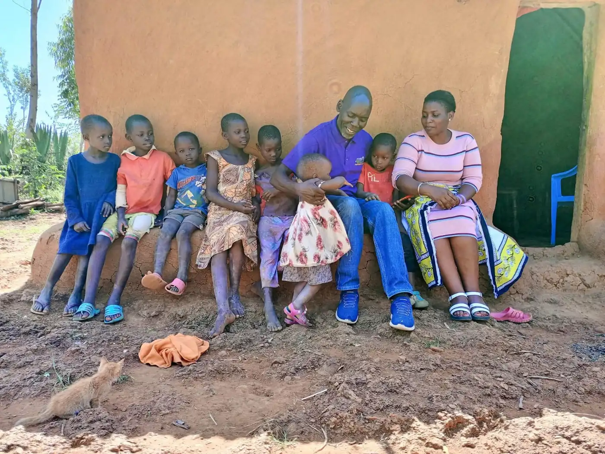
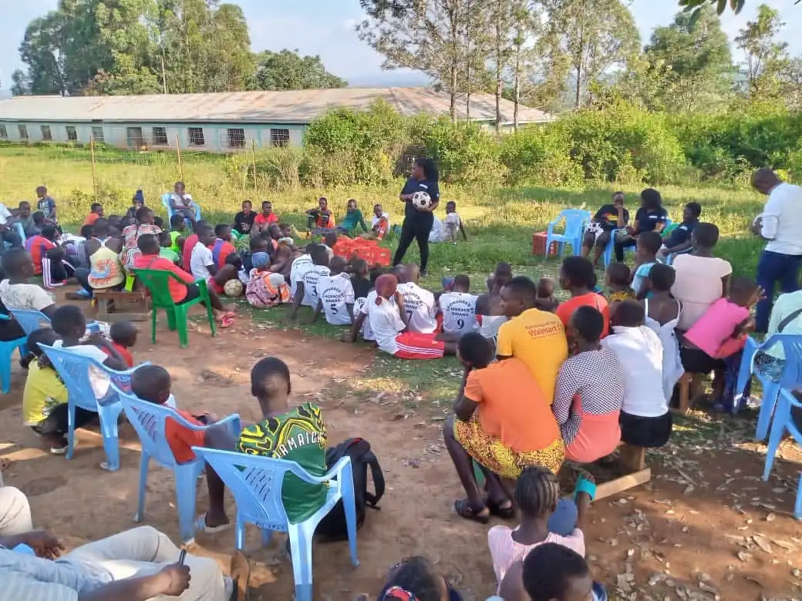

Youth and Adolescent Health Programme
Our Youth and Adolescent Health Programme focuses on SRHR, mental health, mentorship, and peer networks, working with Tiko Africa across 10 civic wards in Homa Bay County.
Read story|
Standing with women, youth and persons with disabilities to end gender-based violence, improve health and build an inclusive Homa Bay.
Year founded in Homa Bay County
Civic wards reached with youth health services
Core programs for women, youth and persons with disabilities
Collaborating partners, from government to foundations


Judes CBO was founded and registered in 2018 in Homa Bay County to close critical gaps in underserved rural communities, where health, education and social equity challenges are deeply connected.
Health professionals, disability advocates and community leaders came together to break barriers such as stigma, lack of accessible services and cultural taboos. Today we are a trusted force for grassroots transformation and advocacy.
To prioritize the needs of the vulnerable and less fortunate by addressing interconnected challenges in education, health, economic empowerment and social justice.
A compassionate and inclusive community where everyone has equal access to the resources, opportunities and support they need to thrive.
Four core areas that empower, protect and uplift our communities while addressing the most pressing social challenges.
Strengthening referral pathways so survivors get health services, legal aid, psychosocial support, safe houses and reintegration.
Learn more 02Sexuality education, contraceptive awareness, HIV prevention and maternal health, working with schools to break stigma.
Learn more 03Safe spaces, peer support groups and counseling to address depression, anxiety and drug abuse among young people.
Learn more 04Dignity and opportunity for people with disabilities, with a focus on neurodiversity and children living with Cerebral Palsy.
Learn moreKindness and support, especially in times of vulnerability.
Skills, knowledge and resources so people lead their own development.
Equal opportunity regardless of gender, ability or background.
Transparency, accountability and ethics in every decision.
Collaboration and collective action for lasting impact.
Moments from outreaches, dialogues and community events across Homa Bay County.


Whether you give, volunteer or partner with us, you help build a Homa Bay where no one is left behind.
Your gift supports survivors, young people and children with disabilities in our community.
Donate nowShare your time and skills in outreaches, mentorship, counseling or awareness campaigns.
Join usOrganisations and institutions can work with us to scale programs across Homa Bay County.
Partner with usReach us in Oyugis, Homa Bay County. We're happy to talk.